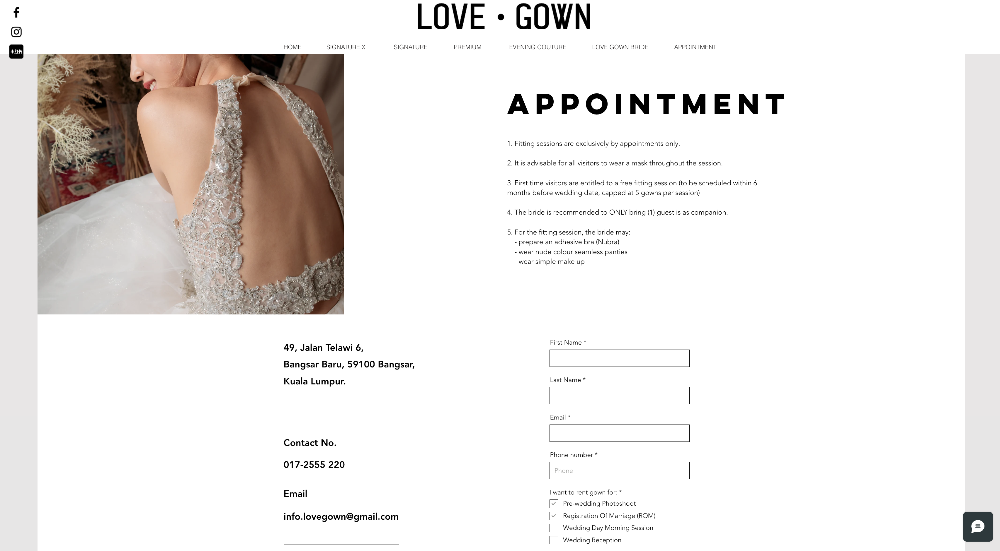
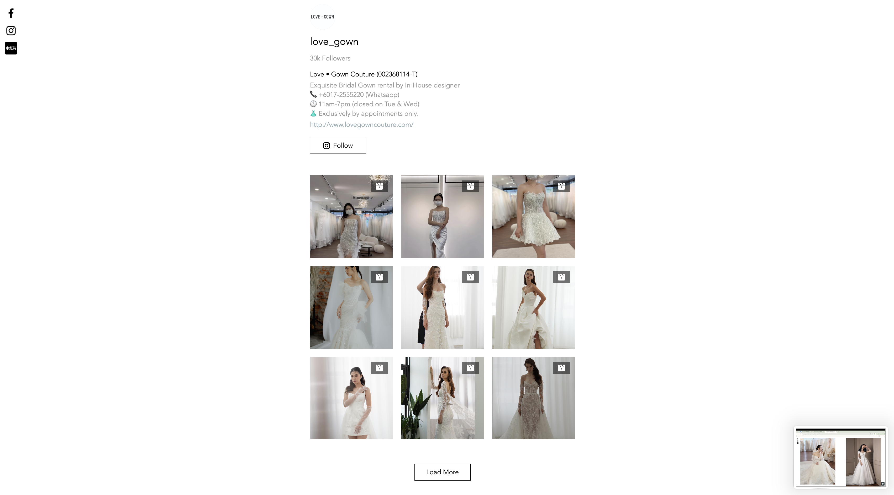
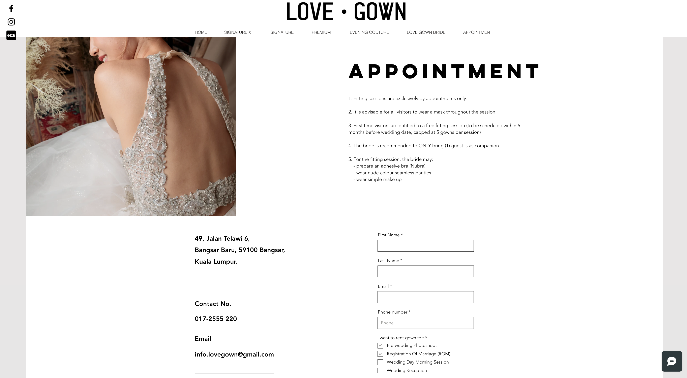
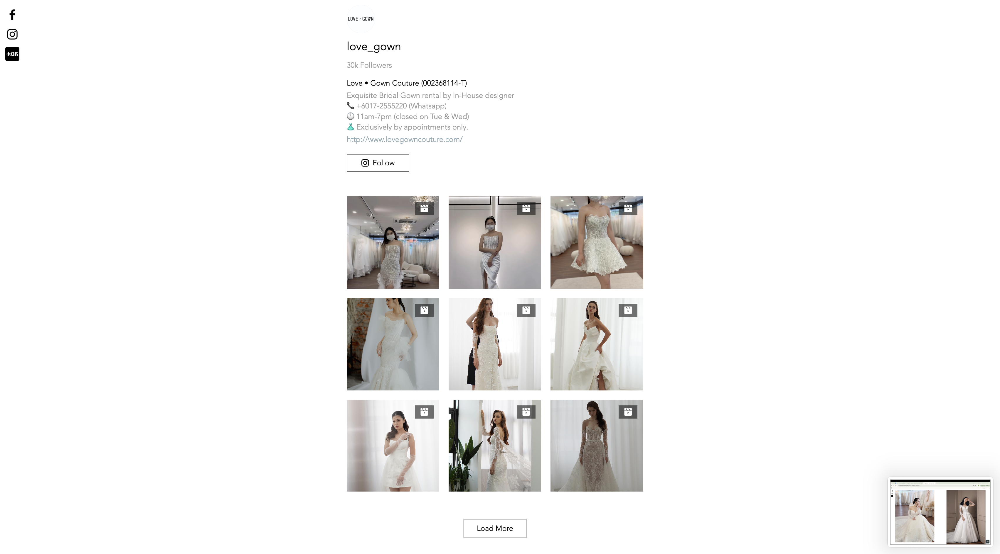

Love Gown Couture

The Proposal
Love Gown Couture’s website was designed as an avenue for the client to reach consumers, modifying the traditional advertising tactics and boost appointments.
Key Objective
The website should enable users to view the gown designs available from a catalogue. After visualizing the gowns, users should have the capability to make an appointment through the site.
Solution
From research and ideation to UI and implementation, I designed the website to allow users to view a catalogue of the gown from the comforts of their home. I also designed the website to include testimonials and an appointment page to give users a platform to connect and set appointments. The application was designed holistically, with branding, logo exploration and development, and marketing concerns met during the process.

 


